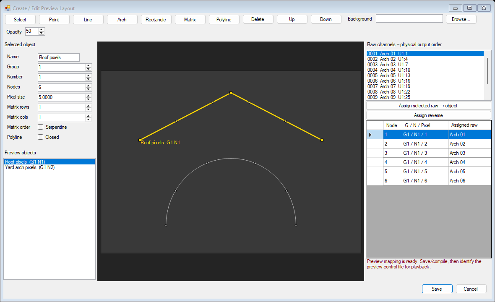
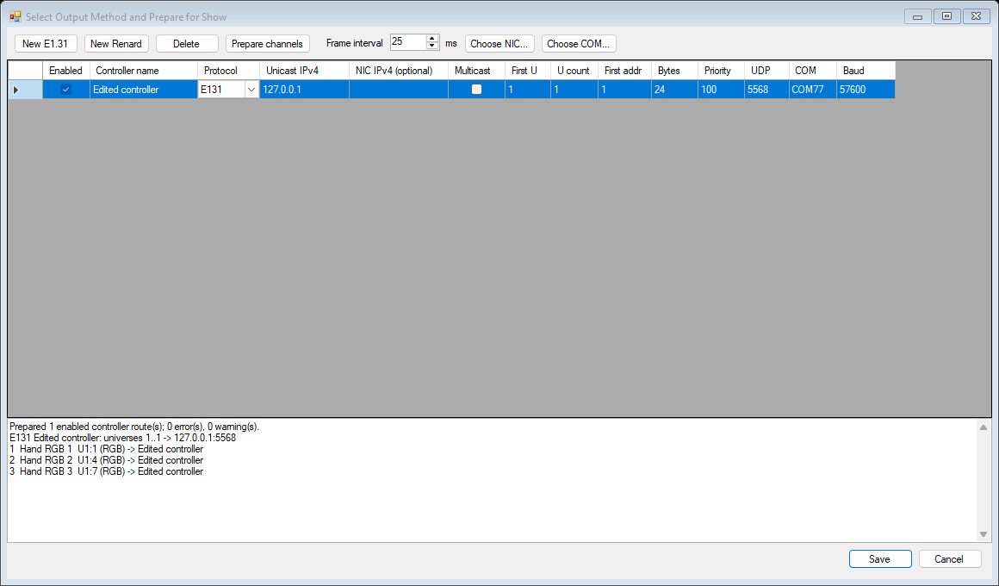
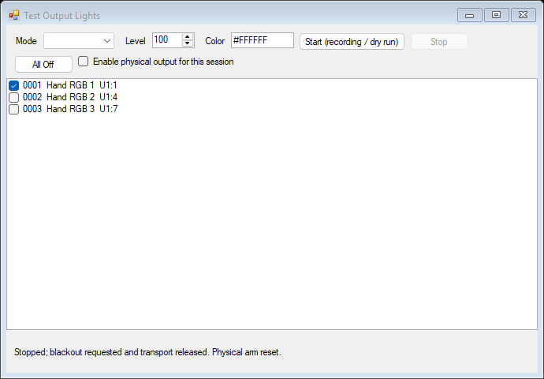

Draw the display.
Map the channels. Test the output.
HLS-style Sequencer 0.4 adds a native display editor, shared Preview Control Files, controller routes and output testing to the existing handcrafted sequencer.
Windows 7 target: native x86 WinForms with full .NET Framework 4.0.
Download HLS-Sequencer.exe, then double-click
HLS-Sequencer.exe. Actual Windows 7 execution and real controllers remain unverified. Older running versions are preserved.
The HLS preview workflow
- Open
display-demo.hlsr, then choose Preview -> Create/Edit Preview. Draw lines, arches, rectangles, matrices and custom polylines over an optional local photograph. - Set the object's Preview Group/Number and node count. Select raw channels in Output order and assign them to the object, forward or reversed. Matrix wiring can be serpentine. A one-node string colors the entire vector.
- Save compiles the Preview Control File. Then choose Preview -> Identify Preview Control File to activate it for the sequence. Changed geometry, mappings or compiled file data invalidate playback preview until updated.
- Reuse the file in another song with matching raw names. Its physical Universe/Address map stays separate. Clicking a light traces its raw or containing Segment/PixelPlane row and controller routes.

Actual offscreen WinForms rendering: editable geometry, independent Group/Number and physical mapping, one-based pixel assignments.Move whole shapes without deforming them at the edge; drag gold handles to change their bounds or vertices. Polyline clicks add vertices and a double-click finishes it. Save/Cancel isolates edits; invalid draft values stay available for correction. Same-path background replacement/deletion refreshes without locking the image.
Prepare channels, select a method, test lights

Enabled routes are configuration. Physical output requires separate session arming.- Output -> Select Output Method: add E1.31 or Renard routes. Choose destination/NIC or COM/baud and physical source ranges.
- Prepare Channels for Output: inspect every raw channel's slots and covering routes. Errors and unpatched/unrouted channels are named.
- Test Output Lights: choose raw channels, Solid/Ramp/Chase, intensity and color. Start defaults to recording. Physical transmission begins only after explicitly arming and pressing Start physical output.
- Stop / All Off / Close: stop and join the worker, request blackout and release sockets/ports. All Off stays off. A delayed stop retains resources for a safe retry.

The dry-run path never opens a controller. Status includes sent frames, packets, skipped ticks and application sending rate.| Transport | Implemented | Limits |
|---|
| E1.31 / sACN | Unicast or per-universe multicast, NIC, priority, 512-slot packets, blackout and three termination packets | 25ms default / 23ms minimum sending interval; no physical 100fps claim |
| Renard serial | 8N1, baud/range, reserved-byte escaping, zero padding and capacity checks | One enabled contiguous route per COM port; hardware/driver behavior unverified |
Compile for show, then check freshness
Compile for Show writes rendered FSEQ and a controller/project manifest. Hashes detect changed sequence/settings and modified output data. A failed manifest publication rolls back the preceding FSEQ update. The footer flags later edits; Check compiled show data verifies a saved manifest after reopening.
Audio preview uses the audio-device clock; checking Send to controllers and pressing Preview arms a single live session. The output worker skips obsolete frames instead of sending a burst after a stall. Stop/end/edit/load/close releases output before audio. Application sending statistics do not measure received or optical timing. UDP blackout is requested without delivery acknowledgement.
Evidence and boundaries
The developer confirmed separate Preview Group/Number assignments and editor Save generating a compiled file; a reported playback issue was fixed by Identify Preview Control File. See the developer explanation and Identify workflow. Preparation/output compilation follows the documented HLS process. The HLS photo/vector tutorial informed the layout study.
Our exact geometry gestures, extra Preview pixel sub-index and .hlsrpreview/.hlsrshow formats are reconstruction choices. Original HLS native files, complete final-version parity, additional protocols and playlists/scheduling are not implemented. Live playback here renders the editable sequence; the manifest is preparation data, not a scheduled show player. No competitor UI/code was used for this milestone.
Packet checks use the E1.31 standard and Renard protocol presentation. The sending interval follows ETC's sACN source settings.
Validation — 228 checks passed: exact C#4/full .NET4.0 x86 build, native hidden-control tests, pure protocol vectors, fake failures and an owned loopback receiver. The earlier above-16MB project/library fix remains covered. See
the complete test log and
build/limits record. No actual sound device, COM controller, LAN lights or Windows 7 machine was used.